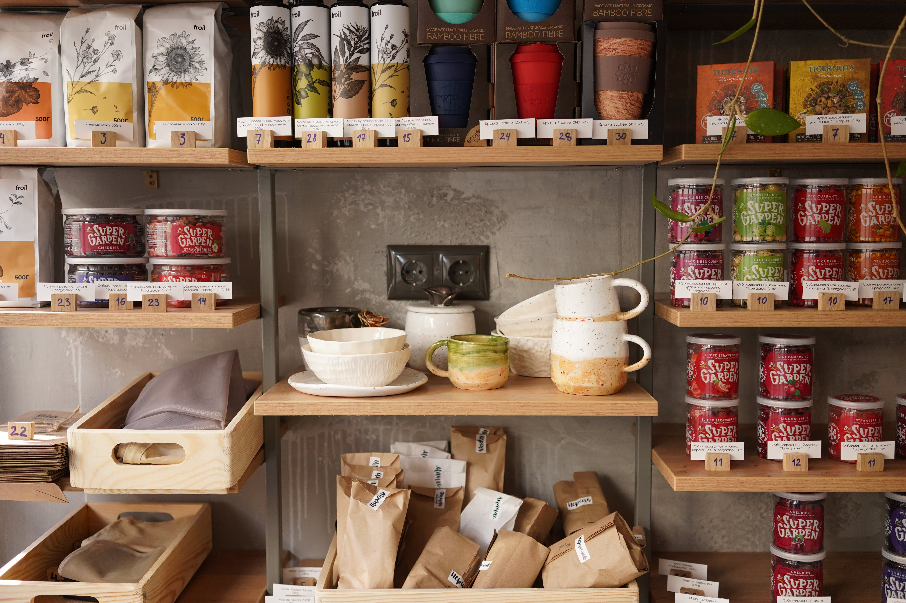
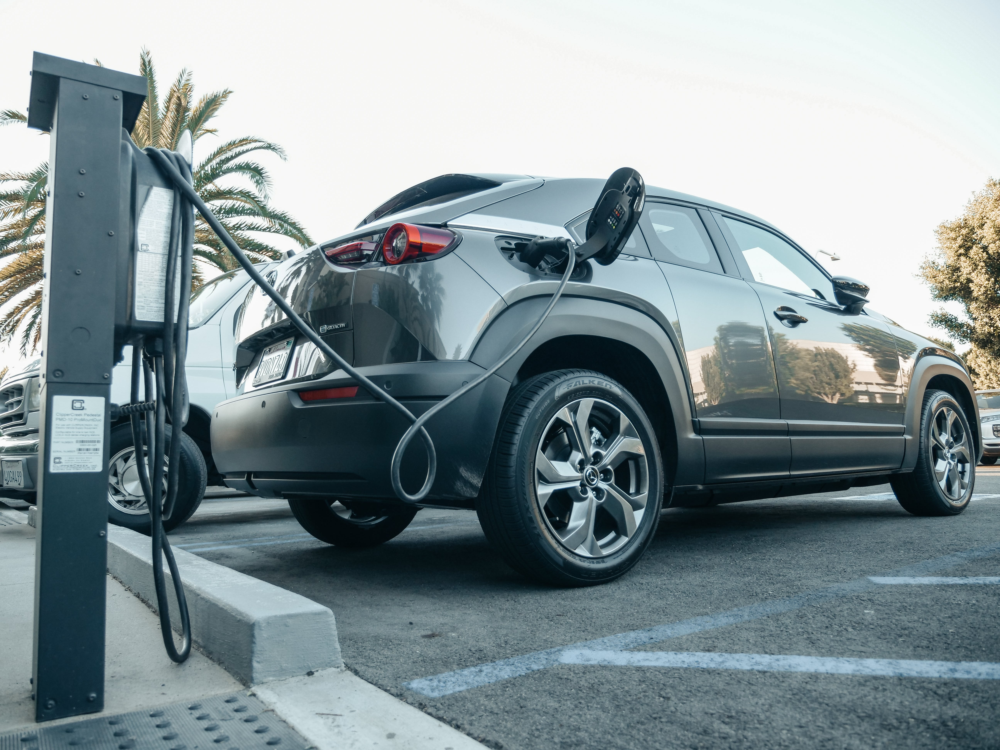
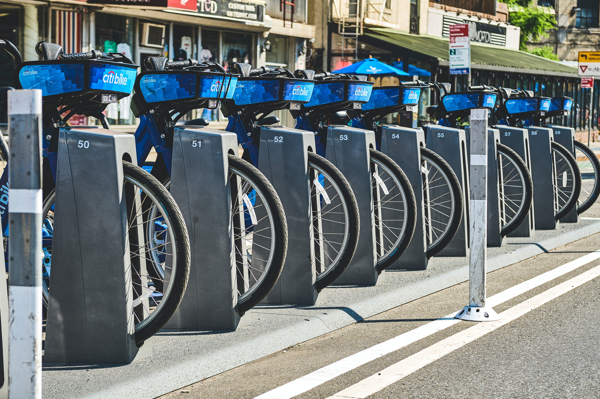

Our process was to start by pulling data for Airbnb We took this data and found the top 20 cities based on Occupancy rate.

This analysis aims to provide valuable insights into the utilization patterns of EV charging infrastructure, as well as conduct a side analysis of the market share of electric vehicles.

The dashboard presents a comprehensive analysis of the Citi Bike trips, taking into account various factors such as user type, and Gender. Additionally, it provides an in-depth examination of trip patterns based week day , as well as the total number of trips per month.